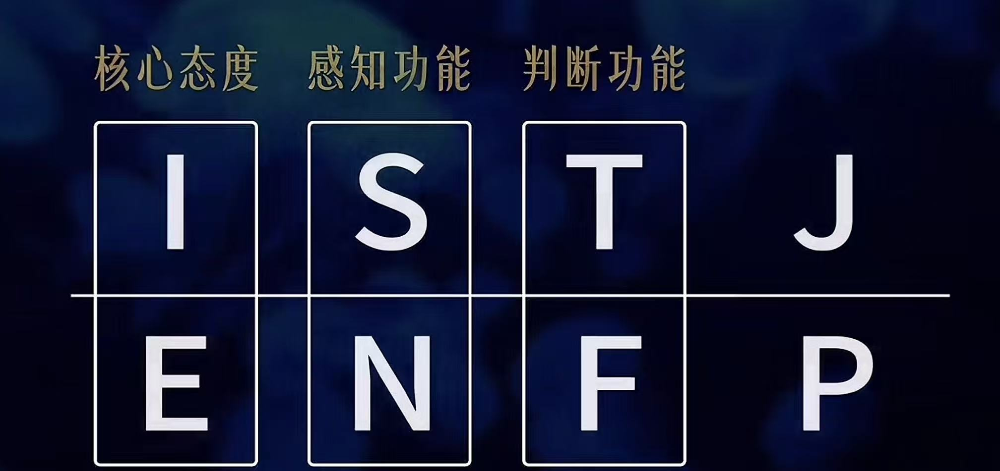
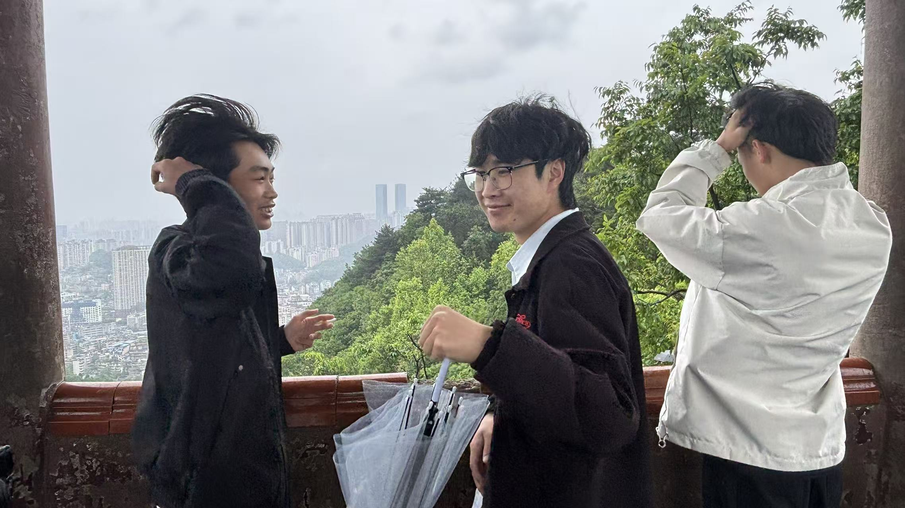
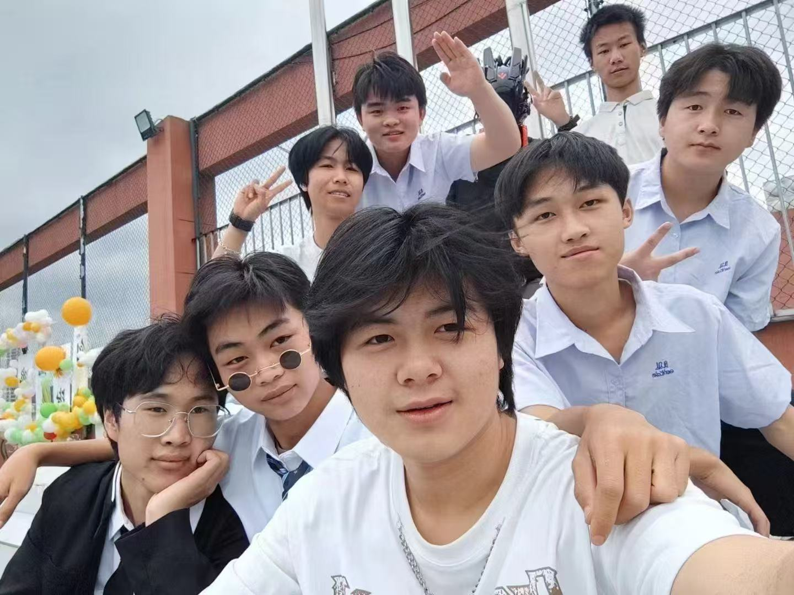

你好，我是一名深耕计算机技术领域的学习者，目标是成为一名优秀的大模型应用架构师。我相信技术的价值在于落地解决实际问题，因此始终在拓宽自己的技术边界——从底层的嵌入式硬件，到前后端全栈开发，再到如今的 AI 大模型与深度学习。
我享受从 0 到 1 构建系统的过程，喜欢钻研技术原理，也注重工程规范与代码质量。在学习中习惯结构化梳理知识，偏好通过可运行的代码和可落地的项目来掌握新技术。
聚焦于大模型应用开发与架构设计，方向包括：大模型推理优化、RAG 检索增强生成、智能体（Agent）开发、AI 全栈工程化。希望将大模型能力与业务场景结合，构建高效、可靠、可扩展的智能应用。
擅长结构化分析，习惯拆解复杂问题
以项目带学习，注重代码可执行性
保持技术敏感度，定期更新知识体系
不只停留在使用，更追求理解底层原理
除了写代码，我也关注自我认知与人际沟通，喜欢研究人格心理学、社会运行逻辑。闲暇时会折腾硬件设备、探索新技术生态，也会通过阅读和整理知识体系来沉淀自己。


